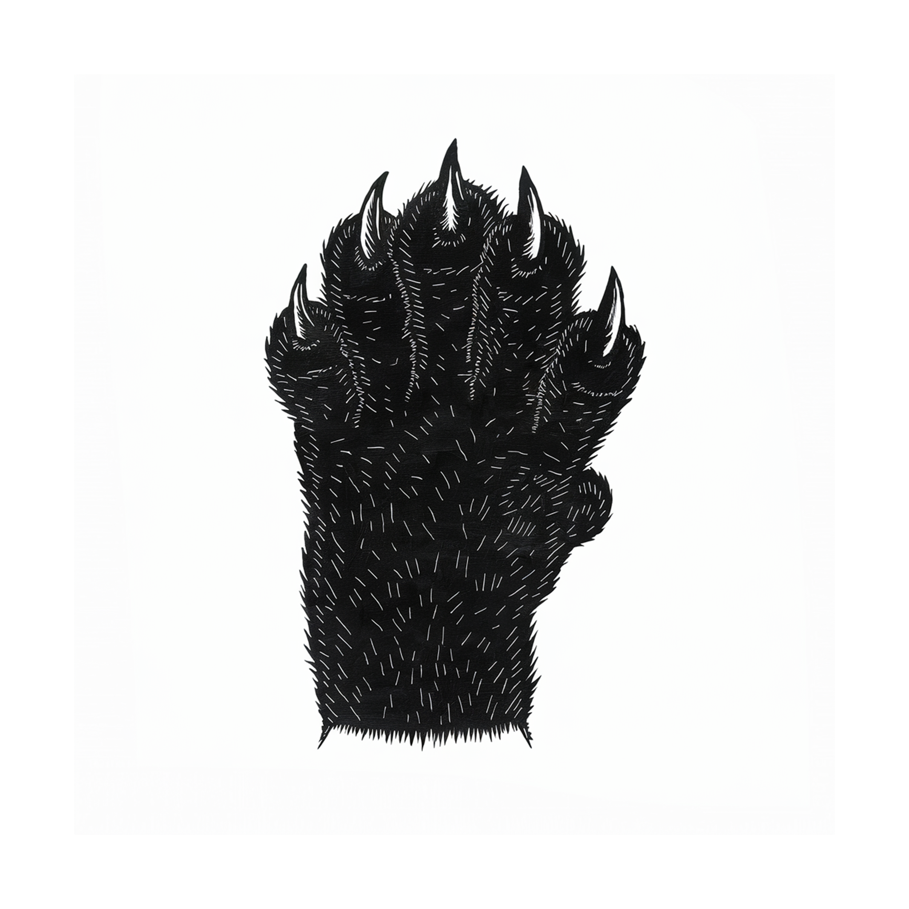

CURIOSITY. AGILITY. PRECISION.
A little more
animal.
The familiar paw, given weight, light and a life of its own. Turn it around.

Your browser cannot show the 3D view. The original illustration is shown instead.
DRAG TO ROTATE · ARROW KEYS TO TURN